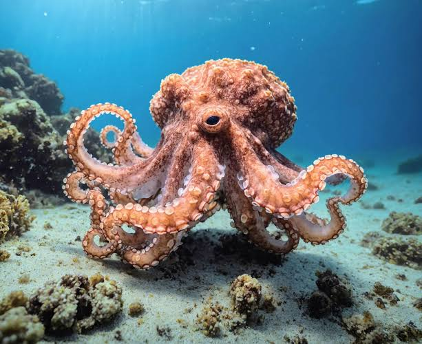
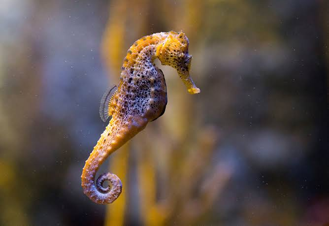

A seguir veja 5 animais e suas curiosidades
Leão
- Os rugidos de um leão podem ser ouvidos a 8 km de distância.
- Vivem em grupos chamados "alcateias".
- Os machos têm jubas que variam de cor, dependendo da idade e da saúde.
Golfinho
- Podem dormir com metade do cérebro ativo.
- São extremamente sociais e vivem em grupos.
- Têm nomes próprios baseados em assobios.

Polvo
- Possuem três corações, e dois deles bombeiam sangue para as brânquias, enquanto o terceiro para o resto do corpo.
- Possuem nove cérebros.
- os polvos têm uma memória complexa e são capazes de demonstrar memória de curta e longa duração
Camaleão
- Podem mudar de cor.
- Além de mudar de cor, seus olhos podem se mover independentemente, permitindo visão quase 360°..
- eles também têm uma língua muito longa e rápida que é usada para capturar presas. Ela pode se estender até duas vezes o comprimento do seu corpo, o que lhes permite capturar presas em uma fração de segundo.

Cavalo-marinho
- Nos cavalos-marinhos, é o macho que carrega e dá à luz os filhotes.
- eles tem em média de 300 a 500 filhotes em uma gestação
- Raias e lasgotins são os predadores do cavalo-marinho. Eles consideram esse peixe um prato e tanto dentro da sua dieta.